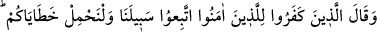

susuzluğa mâruz bırakarak çeşit çeşit eziyetlerle dinlerinde fitnelere düşürürlerdi. Hatta
onlardan biri şiddetli dövülmekten dolayı düzgün oturamazdı. Ebû Cehil ve ona tâbi
olanlar, müslümanlara eziyeti teşvik ediyordu.
Ebû Cehil, şerefli ve haysiyetli birinin müslüman olduğunu işitse, hemen yanına gelir
ve ona şöyle derdi: “Re’yine yenildin, şerefini ayaklar altına aldın.” O kimse tüccar ise
ona da şöyle derdi: “Vallahi ticaretin kesada uğradı, malın helâk oldu.” Eğer müslüman
olan zayıf bir kimse ise ona eziyet ve işkence ederdi; hatta bu yüzden bazı zayıf
kimseler dinlerinde fitneye düşer ve tekrar şirke dönerlerdi. Allah cümlemizi muhâfaza
buyursun!
Bilâl (r.a), Allah için işkence ve azâba uğrayanlardandı. O “Ahad!, Ahad!” yâni Allah
birdir ve ortağı yoktur, sözünden şaşmazdı. İşte îmanlarında kuvvetli ve saâdet ehli
müminler dinlerinde sebat edip dünya azap ve işkencesini, âhiret azap ve şiddetine
tercih ettiler. Çünkü âhiret azâbı, dünya azâbından kat kat şiddetli ve korkunçtur. Şu
dünya ateşi, âhiret ateşinin yetmişte biri kadar sıcaklığa sâhiptir.
Vâsıtî (r.h.) der ki: Peygamberler, Allah dostlarının ileri gelenleri Allah için eziyete
katlanırlar. Sabır, ezâ ve horlanma anında en gerekli sıfat ve haldir.
Molla Câmî der ki:
Sözünde duran vefâlı âşık,
Başına kılıç yağsa da dostun sokağından yüzünü çevirmeyendir.
12. Kâfirler, îman edenlere: Bizim yolumuza uyun, sizin günahlarınızı biz
yüklenelim, derler. Halbuki onların hiçbir günahını yüklenecek değillerdir.
Gerçekte onlar, kesinlikle yalan söylemektedirler.
“Kâfirler,” yâni Mekke kâfirleri, müminleri dinden döndürmek ve saptırmak için
“îman edenlere:”
“îman edenlere” ifâdesindeki “lâm”, tebliğ içindir.
“Bizim yolumuza uyun.” Yâni din konusunda bizim yaşamakta olduğumuz yola girin.
Yola girme işi “ittibâ” diye tabir edilmiştir. Çünkü tâbi olmak, yürüyen başka bir
kimsenin arkasından gitmek anlamına gelir. Burada tutulan yol (meslek), yola girenin
menzilesine (sâlik) indirilmiştir.
“Sizin günahlarınızı biz yüklenelim,” şayet hatânız olursa biz üstlenelim ve
taşıyalım, “derler.”
Yani, eğer tekrar dirilmek ve yaptıklarımızdan dolayı sorguya çekilmek, dediğiniz gibi
hak ve gerçekse, sizin hatâlarınızı biz taşırız, dediler. Bu cümlenin mânâsı, “öldükten